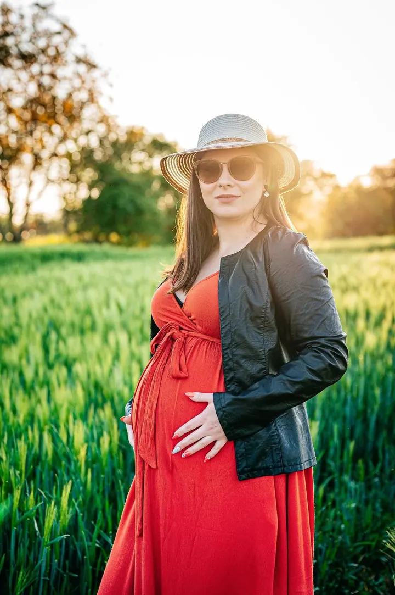
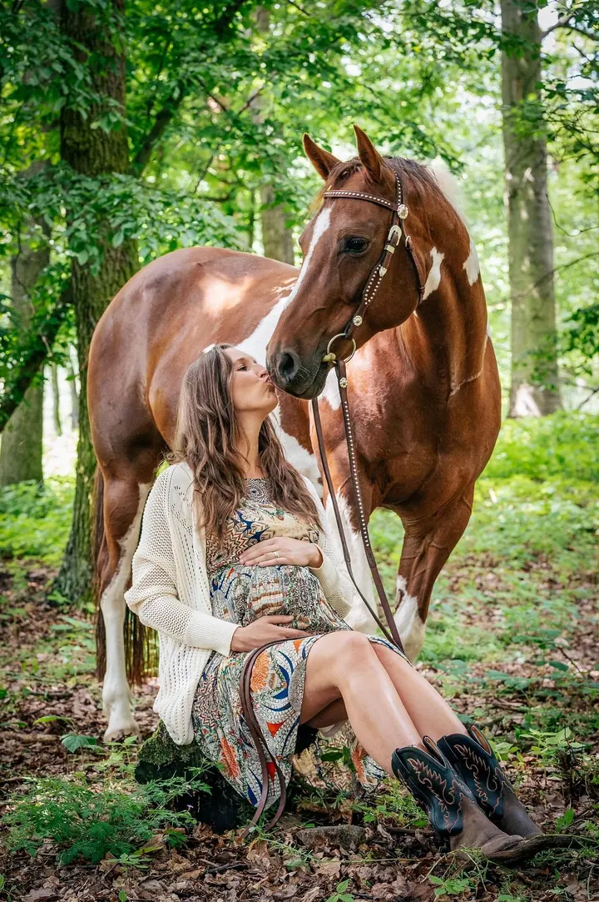
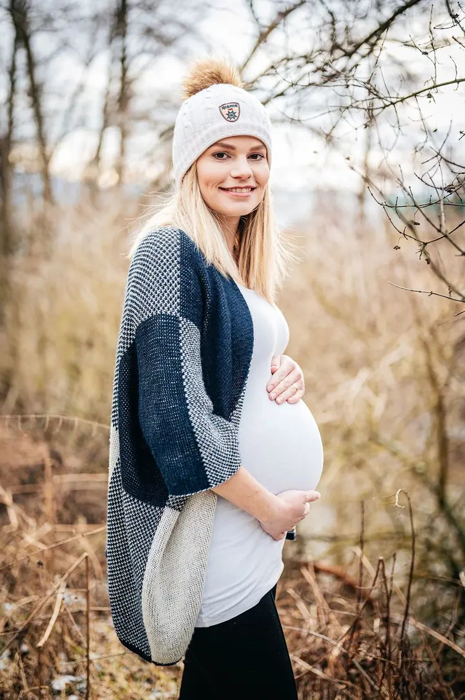

jedna
Svatby
Fotím celý svatební den i samostatné focení novomanželů mimo svatební den. Pro nacenění mi napište lokalitu a předpokládaný časový rozsah focení.


Jmenuji se Jana Máčková a v Uherském Brodě a okolí fotím svatby, těhotenství i rodiny s dětmi. Nejraději fotím venku, ale pro zimní měsíce mám v Újezdci i vlastní ateliér.
Více o mně
Co fotím
jedna
Fotím celý svatební den i samostatné focení novomanželů mimo svatební den. Pro nacenění mi napište lokalitu a předpokládaný časový rozsah focení.
dvě
Focení s bříškem venku v přírodě nebo v ateliéru, v létě i ve sněhu. Přizvat můžete partnera, nebo třeba i vašeho koně.
Focení v ateliéru nebo v exteriéru, klidně i s domácími mazlíčky. Fotím také miminka do 6 měsíců, buď lifestyle u vás doma, nebo venku či v ateliéru.
Propagační a reklamní fotky pro web a tiskoviny, focení firmy a zaměstnanců i interiérů. Fotím také kulturní akce, oslavy, večírky a křtiny.
Nejraději fotím venku, v létě i ve sněhu.

Za objektivem
Fotografii se věnuji od roku 2003, kdy se mi do rukou dostal první digitální kompakt. Dnes je focení mojí prací, která mě živí, a zároveň zůstává mým koníčkem. Nejraději fotím lidi a zvířata.
Zaměřuji se hlavně na svatby, portréty, rodiny s dětmi a komerční fotografii. Ráda fotím i těhotné maminky a miminka, a když máte koně nebo jiného mazlíčka, klidně ho vezměte s sebou.
Nejraději fotím venku, ale v Újezdci u Uherského Brodu mám i ateliér, který se hodí hlavně v zimě, kdy venku není moc světla. Ve volném čase ráda cestuji a doplňuji své portfolio o fotky z různých koutů světa.
Jana
Ozvěte se e-mailem nebo přes WhatsApp. U svatby prosím rovnou uveďte lokalitu a předpokládaný časový rozsah focení.
Vybereme balíček a místo, buď venku, v ateliéru, nebo kombinaci obojího. Domluvíme termín, o víkendu a ve svátek podle dohody.
Focení trvá podle balíčku zhruba hodinu až dvě. Nikam nespěcháme, ať se před foťákem cítíte přirozeně.
Upravené fotky vám pošlu do webové galerie, u portrétů a rodin zhruba do 3 až 5 týdnů od focení.
Portfolio
Otázky
Malý balíček s 5 upravenými fotkami stojí 2300 Kč, střední s 10 fotkami 2800 Kč a velký s 18 fotkami 3300 Kč. Každá další fotka je za 200 Kč.
Napište mi na janefoto.cz@gmail.com, kde fotíte a jak dlouho má focení trvat, a já vám pošlu nacenění. Samostatné svatební focení mimo svatební den stojí 5000 Kč.
Ano, ráda za vámi přijedu. Doprava mimo Uherský Brod se účtuje 8 Kč za kilometr.
Určitě. Venku fotím i ve sněhu, a když je venku málo světla, můžeme se přesunout do mého ateliéru v Újezdci.